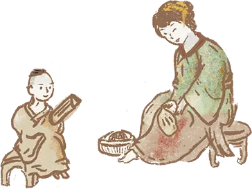

中國文哲研究所
Institute of Chinese Literature
and Philosophy, Academia Sinica

2021
院區開放活動
書與人
THE LIVES OF BOOKS

「書」是什麼
WHAT IS A BOOK
人們總說，當代人越來越不讀書了，書即將從我們的生活中消失……真的是這樣嗎？回看歷史，書籍有各種不同的樣貌。除了你熟知的裝訂紙張，甲骨、竹簡、卷軸，也都是一種「書」。這些過去的書，在歷史的長河中演變至今——書並非只有一種樣子，可以說只要文字還在，「書」就不會消失。就連你現在所讀的這段文字，也是一種「書」。
「誰」讀書
Who are the Readers
如今人人都識字、人人都可以讀書。但你是否曾想過，「識字讀書」也曾經是一種特權？曾經，書寫的工具極為稀有，只有皇室貴族能讀書，只有他們能透過書得到知識。隨著書寫工具的普及，「讀者」也越來越多元。婦女與幼童可以讀書，販夫走卒也可以讀書……如今，無論你是誰，都能享受閱讀的趣味。

古籍與現代世界
Rare Books and the Modern World
古籍是以前人讀的書，我們現在所讀的書，未來有一天也會變成「古籍」。但是當人們的生命隨著時間消失了，他們讀過的書，依然會留在這個世界上，告訴後面的人：我們這個時代閱讀的是這樣的書、我們吸收的是這樣的知識——作為讀者的我們，是這樣活著的。

掃描集章抽獎

書頁邊緣
On the Margins of Books
從小到大，我們都在不同的書本上，讀過《論語》、《孟子》，默背過李白、杜甫和李商隱的詩句。或許，我們也對《三國演義》「草船借箭」或《紅樓夢》「劉姥姥遊大觀園」等古典小說的情節，耳熟能詳， 朗朗上口。此刻的我們，可以隨時展讀這些文字，也可以在網路上輕易的以關鍵詞召喚出全文。但是，你是否也曾經想像過：這些年代久遠的文字，最初是以什麼樣的方式，被書寫在紙頁上？


人文來風
Humanities is a bag of fun
這是由文哲所同仁共同製播的Podcast頻道。2020年9月2日正式開播，每週三上架新節目，有時特調一杯文學的優雅午茶、有時冰滴一杯哲學的醒腦咖啡、有時溫一杯經學釀的醇酒，為生活帶入人文風。透過文哲所網站的連結點、Sound on聲浪或 Apple Podcasts等平台，都可以與我們空中相聚，一起遨遊人文風，一起瘋人文。